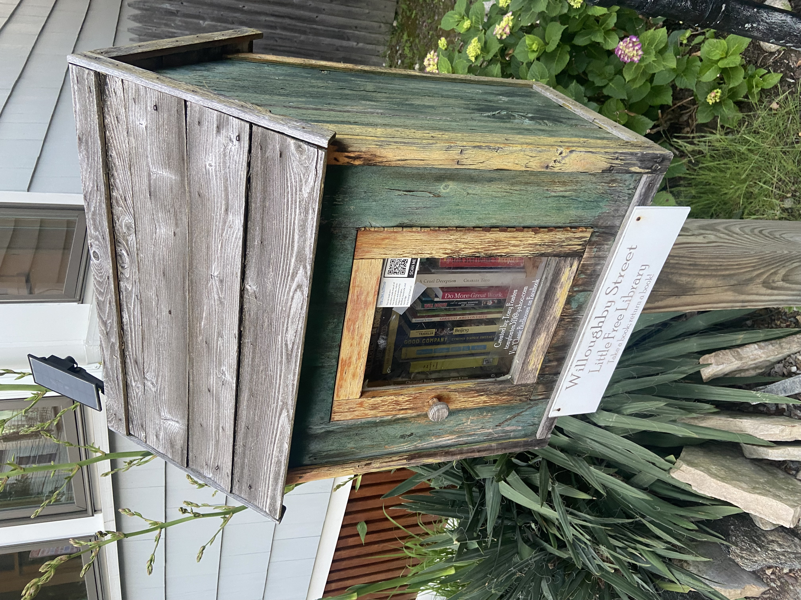
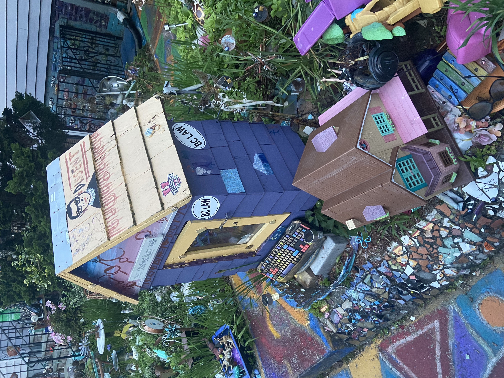
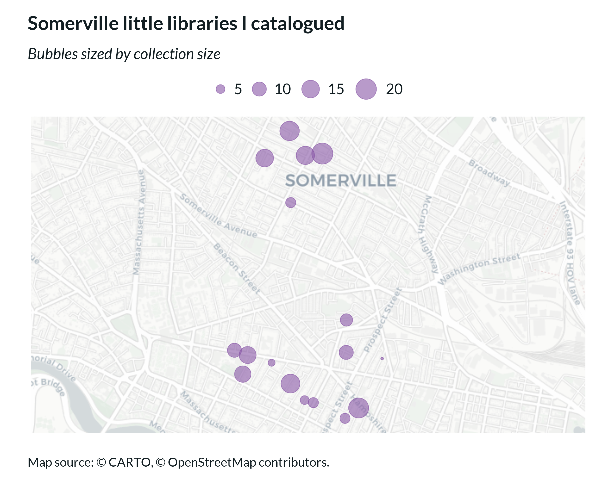
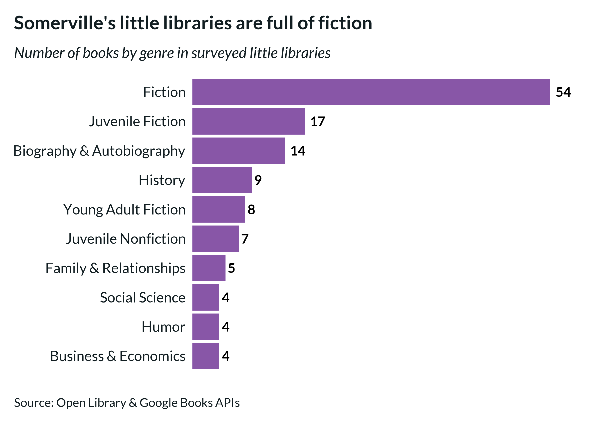
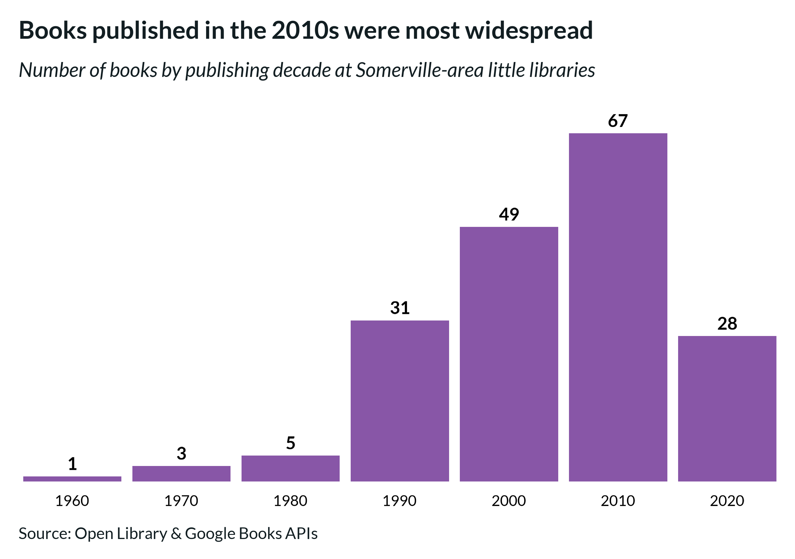
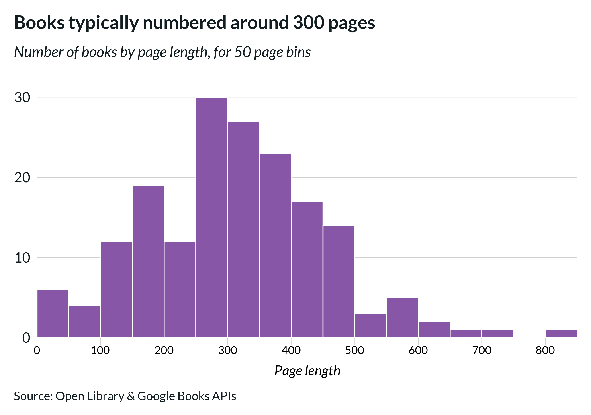

A data-driven look at the books, genres, and trends across 17 neighborhood collections
By Camden Blatchly
Have you ever scored a great book at a little library? I
once did. Deep into a months-long wait for Crying in H-Mart
at the public library, I came across a copy at my
neighborhood little library. My find wasn’t entirely
perfect—the text was in large print—but it was better
than waiting another two months. More often though, when
I peek into a little library, I’m amazed by how bizarre
the collection seems. Dated parenting guides, splashy crime
thrillers, and fantastical YA novels abound, not to mention
an ever present (but unwanted) copy of The Girl with the Dragon Tattoo.
I always find myself wondering, what kind of selection is this, exactly?

The little library on Willoughby St—home to the largest collection I catalogued
So when I heard about a library cataloguing app
from my friend Emilia, I got an idea. Perhaps,
by using this app, I could take a more rigorous
and unified look at the collection of books held
in Somerville little libraries. After consulting
a map of local little libraries, I hit the streets.
At each little library, I scanned all the books
into the Libib app using their barcodes, if present.
Once scanned, I was able to get the ISBN of each book,
which I then used to query the Google Books and Open
Library APIs to create a complete dataset with details
on each book's publishing date, length, genre, and more.

This little library on Spring Hill Terrace was worth a visit for its yard decorations alone
Right away, I noticed a big difference in how well-stocked
each library was. Out of the 17 libraries I visited,
I found the largest assortment of titles in a sturdy
green library on Willoughby St, which held an impressive
21 books. Some, like a slogan-covered library on
Norfolk St with a sparse collection of 3 books,
were disappointing in their size. Most, however,
offered a decent browsing selection. With the median little
library holding about 10 books, I found most libraries
worthy of a brief look.

What did these collections contain? I wasn’t sure
if there were actually that many parenting guides,
or if I was just projecting my insecurities around
close friends beginning to start families. Turns
out, my perception wasn’t entirely unfounded as the
Family & Relationships category came in as the seventh
most common genre. While fiction was overwhelmingly
the most prevalent category, I was surprised to see how
popular the Juvenile and Young Adult genres were,
which, when combined together, accounted for 32 books.
I guessed that the number of Juvenile and YA books
was perhaps due to some of the little libraries’
proximity to the local high school, but when I
looked into the data, the four libraries near the
high school only accounted for seven Juvenile and YA books.
Turns out, the prevalence of this genre is widespread
across Somerville and Cambridge.

When were most books published? I expected the collection
in little libraries to trend older, since I assumed
donors would be more willing to part with books they’ve
had for a few years. Upon inspection, the most common
publishing decade for books was 2010, with the vast
majority of books being published from 1990 onwards.
The lack of barcodes on older books likely contributed to
this recency bias. Barcodes weren’t adopted by publishers
until the mid-80s, and even then, they faced resistance
from designers, who thought the codes marred their
compositions, and idealistic publishers, who thought
barcodes’ commercial association corrupted books’ purity.
Being published before widespread adoption wasn’t the
only reason books lacked barcodes. Some paperbacks were
simply too faded, while hardcover books in little libraries
were often missing their jackets (and therefore their
barcodes too). At an eclectically decorated little
library (and yard) on Spring Hill Terrace, I came
across several newly-published books which lacked
barcodes. On further inspection, these books were all
advance reader copies, likely donated by a bookseller,
reviewer, or librarian.

The longest book I catalogued was The Bedford Handbook, an
849-page tome about the mechanics of the English language.
At the other end of the scale were two alliterative children’s
books—Sammy Spider's First Mitzvah and Sunny the Sneaker—each
just 24 pages long. The most common length was right around 300 pages.

During my 17 little library visits, I did manage to find a book I wanted to
read: A Room with a View by E.M. Forster—a classic I’ve had on my list
for a few years now. Unfortunately, it was too tattered to have a
readable barcode, so, like twenty or so other books I came across, it wasn’t
included in my dataset.
Of course, I felt compelled to leave a book in turn. If you’d like
a copy of Either/Or by Elif Batuman, you can find it at the Norfolk St
little library—I thought it was best to prop up the smallest collection.
Alternatively, you can peruse the full collection I catalogued
and see if there's anything that catches your interest. Happy browsing!